library(tidyverse)
library(data.table)9 Predictive Modelling and Beyond
Learning Objectives
- Use model predictions to make informed decisions on new or unseen data
- Apply time series analysis to forecast the Socio-Demographic Index (SDI)
- Estimate Years Lived with Disability (YLDs) using mixed-effects models
In the dynamic landscape of public health, the ability to forecast and predict future trends is essential for effective decision-making and the implementation of timely interventions. This chapter provides an overview of predictive modelling, focusing on the challenges of applying predictions to new data, the use of time series analysis, and mixed models to anticipate the trajectory of infectious diseases and health metrics. By exploring the underlying patterns and analysing historical data, we estimate the disease burden and evaluate the impact of interventions on population health. We demonstrate how time series analysis and mixed models can be tailored to address specific research questions, such as predicting disease outbreaks, estimating disease burden, and assessing the impact of interventions on population health.
9.1 Predictions About the Future
The previous chapters provided an attempt at estimating future outcomes based on the application of various type of statistical and machine learning techniques. Here we look at how to use these predictions on new data.
When making predictions on new data, it is important to consider the generalisability of the model. A model that performs well on the training data may not necessarily generalise well to new, unseen data. To evaluate the performance of the model we used the cross-validation technique, but there are more such as hold-out validation, k-fold cross-validation, leave-one-out cross-validation, and bootstrapping. These methods help assess the model’s ability to make accurate predictions on data not used during training, providing a more reliable estimate of the model’s performance in real-world scenarios.
Once the model has been trained and evaluated, it is used to make predictions on new data. This process involves applying the model to the new data to generate forecasts or estimates of the outcome of interest. For example, in the case of infectious diseases, predictive models can be used to forecast the trajectory of an outbreak, estimate the number of cases, or evaluate the impact of interventions on disease transmission. By leveraging historical data and the insights gained from the model, we can effectively evaluate the model performance and make informed decisions based on the predictions.
9.2 Example: Dengue Test Predictions for 2017-2021
Predictive modelling is a powerful tool for forecasting future trends. Here we test the Dengue’s model made with {mlr3} meta-package in Chapter 8. The model was trained on data from 1990 to 2016 and now tested for years 2017 to 2021.
First we load the original data and name it old_data.
old_data <- hmsidwR::infectious_diseases %>%
arrange(year)%>%
filter(cause_name == "Dengue",
year<=2017,
!location_name %in% c("Eswatini", "Lesotho")) %>%
drop_na() %>%
group_by(location_id) %>%
select(-location_name, -cause_name)Then, we load Dengue data from 2017 to 2021 and name it new_data.
new_data <- hmsidwR::infectious_diseases %>%
arrange(year)%>%
filter(cause_name == "Dengue",
year>=2017,
!location_name %in% c("Eswatini", "Lesotho")) %>%
drop_na() %>%
group_by(location_id) %>%
select(-location_name, -cause_name)In the next step, we use the trained models from Chapter 8 to make predictions on the new data. The predictions are stored in new_pred_regr.cv_glmnet and new_pred_regr.xgboost. The resampling results: rr1$learners and rr2$learners, contain the trained models, in particular the first of 5 folds cross validation sample is used for the predictions.
new_pred_regr.cv_glmnet <-
rr1$learners[[1]]$predict_newdata(new_data,
task = rr1$task)This object contains the predictions for the new data, and we can access the response data by:
new_pred_regr.cv_glmnet$`data`$responseWith the support of data.table::as.data.table() we can see the data, and create a new column ape to evaluate the Absolute Percentage Error (APE). Here are shown the first 6 rows of the data:
data.table::as.data.table(new_pred_regr.cv_glmnet) %>%
mutate(ape = round(abs(truth - response)/truth,3)*100) %>%
head()
#> row_ids truth response ape
#> <int> <num> <num> <num>
#> 1: 1 3.3219788 3.2615171 1.8
#> 2: 2 2.2361377 2.2855594 2.2
#> 3: 3 0.5021275 0.6403621 27.5
#> 4: 4 3.2737870 3.2193092 1.7
#> 5: 5 0.4893329 0.6327542 29.3
#> 6: 6 2.3045710 2.3715899 2.9And calculate some metrics to evaluate the model performance on new data. We calculate the Mean Absolute Percent Error (MAPE), the Mean Squared Error (MSE), and the Root Mean Squared Error (RMSE). The MAPE is a measure of prediction accuracy, while the MSE and RMSE are measures of the average squared difference between predicted and actual values.
data.table::as.data.table(new_pred_regr.cv_glmnet) %>%
mutate(ape = round(abs(truth - response)/truth,3)*100) %>%
summarise(mape = mean(ape),
mse = mean((truth - response)^2),
rmse = sqrt(mean((truth - response)^2))) %>%
round(3)
#> mape mse rmse
#> 1 11.413 0.01 0.098The model performs fairly well, with relatively low error:
- An average relative error of ~11% is typically considered acceptable in many forecasting or prediction tasks.
- The small RMSE (0.098) and MSE (0.01) suggest that large errors are rare or small.
Much more can be done to improve the models, such as hyperparameter tuning, feature engineering, and model ensembles, but this is a good point to start. We could also look at the confidence intervals of the predictions, to see how certain we are about the predictions, and so on.
This is the result of the cv_glmnet application on new data:
regr.cv_glmnet_new <- as.data.table(new_pred_regr.cv_glmnet) %>%
mutate(learner = "regr.cv_glmnet") %>%
cbind(new_data)
regr.cv_glmnet_new %>%
ggplot(aes(x = year)) +
geom_line(data = old_data, aes(y = DALYs))+
geom_line(aes(y = DALYs), color = "brown") +
geom_line(aes(y = response), linetype = "dashed") +
facet_wrap(vars(location_id),
labeller = as_labeller(c(`182` = "Malawi",
`191` = "Zambia",
`169` = "Central African Republic")),
scales = "free_y") +
labs(title = "Dengue Predictions for 2017-2021: cv_glmnet",
x = "Time (Year)")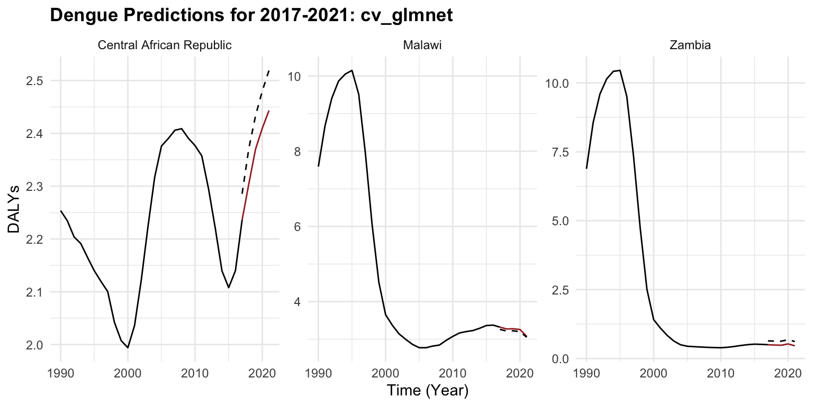
The same steps are taken for the xgboost, and the results are shown below to compare the two models.
new_pred_regr.xgboost <-
rr2$learners[[1]]$predict_newdata(new_data,
task = rr2$task)regr.xgboost_new <- as.data.table(new_pred_regr.xgboost) %>%
mutate(learner = "regr.xgboost") %>%
cbind(new_data)rbind(regr.cv_glmnet_new,
regr.xgboost_new) %>%
mutate(ape = round(abs(truth - response)/truth, 3)*100) %>%
group_by(learner) %>%
summarise(mape = mean(ape),
mse = mean((truth - response)^2),
rmse = sqrt(mean((truth - response)^2)))
#> # A tibble: 2 × 4
#> learner mape mse rmse
#> <chr> <dbl> <dbl> <dbl>
#> 1 regr.cv_glmnet 11.4 0.00963 0.0981
#> 2 regr.xgboost 20.1 0.0567 0.238The glmnet performs better than xgboost. The xgboost model may be overfitting or it is just poorly tuned, given its higher error despite being a more complex model.
regr.xgboost_new %>%
ggplot(aes(x = year)) +
geom_line(data = old_data, aes(y = DALYs))+
geom_line(aes(y = DALYs), color = "brown") +
geom_line(aes(y = response), linetype = "dashed") +
facet_wrap(vars(location_id),
labeller = as_labeller(c(`182` = "Malawi",
`191` = "Zambia",
`169` = "Central African Republic")),
scales = "free_y") +
labs(title = "Dengue Predictions for 2017-2021: xgboost")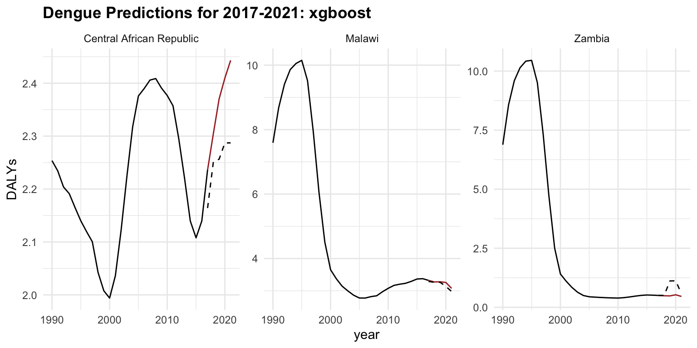
In conclusion, predictive modelling is a valuable tool for forecasting future trends and making informed decisions based on historical data. By leveraging the insights gained from the models, we can anticipate the trajectory of infectious diseases, estimate disease burden, and evaluate the impact of interventions on population health. The models can be further refined and optimised to improve their predictive performance and provide more accurate forecasts.
By combining predictive modelling with time series analysis and mixed models, we can gain a comprehensive understanding of the complex dynamics of public health and make data-driven decisions to improve population health outcomes.
9.3 Time Series Analysis
One important side of the analysis is to consider the evolution of the phenomenon in time. We can do this by using time as a factor in the model. Time series analysis serves as a tool for understanding and forecasting temporal patterns. Techniques such as AutoRegressive Integrated Moving Average (ARIMA) models offer a systematic approach to modelling time-dependent data, capturing seasonal variations, trends, and irregularities to generate accurate forecasts.
Mixed models, on the other side, provide a versatile framework for incorporating various sources of variability and correlation within the data. Also known as hierarchical models, multilevel models, or random effects models, are a type of statistical model that include both fixed effects and random effects. By combining fixed effects with random effects, mixed models accommodate complex data structures, such as hierarchical or longitudinal data, while accounting for individual-level and group-level factors that may influence the outcome of interest.
To analyse temporal data, where observations are collected at regular intervals over time, time series analysis allows for studying the patterns, trends, and dependencies present in the data to make forecasts or infer relationships. Time series data often exhibit inherent characteristics such as trend, seasonality, cyclic patterns, and irregular fluctuations, which can be explored using various methods such as decomposition, smoothing, and modelling. This analysis is widely used in fields like economics, finance, epidemiology, and environmental science to understand and predict future trends, identify anomalies, and make informed decisions based on historical patterns.
Decomposition methods play a crucial role by pulling out the underlying structure of temporal data. The components of a time series are trend, seasonality, and random fluctuations. Understanding the trend allows for the identification of long-term changes or shifts in the data, while detecting seasonal patterns helps uncover recurring fluctuations that may follow seasonal or cyclical patterns.
By separating these components, through decomposition methods, it is possible to discover the temporal dynamics within the data, facilitating more accurate forecasting and predictive modelling. Moreover, decomposing time series data can aid in anomaly detection, trend analysis, and seasonal adjustment, making it a fundamental tool for interpreting complex temporal phenomena.
Modelling time series data often requires a combination of techniques to capture its complex nature. Mixed models, Splines, and ARIMA are powerful tools commonly used for this purpose. Splines provide a flexible way to capture nonlinear relationships and smooth out the data, which is particularly useful for capturing trends or seasonal patterns. ARIMA models, on the other hand, are best at capturing the autocorrelation structure present in the data, including both short-term and long-term dependencies.
Time series analysis can also be performed on estimated values produced by a machine learning model. This involves using vectors of estimates, actual values (ground truth), and time (such as years). By incorporating these elements, the time series analysis can help identify trends, seasonal patterns, and other temporal structures within the data. This approach enhances the robustness and accuracy of the predictions by combining the strengths of machine learning models with traditional time series techniques.
9.4 Example: SDI Time Series Analysis
In this example, we provide a brief overview of the Socio-Demographic Index (SDI), its components, and how it can be predicted using time series analysis. From projecting the spread of emerging pathogens to assessing the long-term effects of public health policies, predictive modelling offers valuable insights into the future of global health. As discussed in Chapter 5, incorporating indicators such as the SDI can offer a more comprehensive understanding of how social and economic determinants influence health outcomes.
The SDI is a composite index developed by the Global Burden of Disease (GBD) Study to capture a country’s level of socio-demographic development, that combines various social and demographic factors to provide a comprehensive measure of a population’s health and well-being.
It is based on three components:
- Total fertility rate (TFR) among women under age 25 (TFU25)
- Average educational attainment in the population over age 15 (EDU15+)
- Income per capita (lag-distributed)
It ranges from 0 to 1 but it is usually multiplied by 100 for a scale of 0 to 100.
Standard Calculation of SDI
The SDI is calculated as the geometric mean of these three components:
SDI = \sqrt[3]{TFU25 \times EDU15+ \times LDI} \tag{9.1}
Each component TFU25, EDU15+, and LDI is normalised before taking the geometric mean to ensure they are on a comparable scale.
In particular, Total Fertility Rate (TFR) defined as the average number of children a woman would have over her lifetime given current age-specific fertility rates—is a key demographic indicator with broad implications for national well-being.
Standard Calculation of TFR
\text{TFR} = \sum (\text{ASFR}_i \times 5) \tag{9.2}
where \text{ASFR}_i represents the age-specific fertility rates for age group i , and the sum is typically calculated over all childbearing age groups (often 5-year intervals from ages 15-49).
The TFR formula is specific to calculating fertility rates, while the SDI formula incorporates a specific subset of the TFR (TFU25) along with education and income metrics to create a broader socio-demographic index.
In general, the level of this index helps identify key drivers in the development of health outcomes. SDI can be used as a predictor in predictive models to estimate the burden of diseases, mortality rates, and other health metrics.
For example, the relationship between SDI and the incidence of a disease can be modelled using a logistic regression model:
\log \left( \frac{p}{1 - p} \right) = \beta_0 + \beta_1 \times \text{SDI} + \beta_2 \times X_2 + \cdots + \beta_k \times X_k \tag{9.3}
Where, p is the probability of the incidence of the disease, \log \left( \frac{p}{1 - p} \right) is the log-odds (logit) of the disease incidence, \beta_0 is the intercept term, \beta_1, \beta_2, \ldots, \beta_k are the coefficients for the predictor variables, and X_2, \ldots, X_k are other potential predictor variables that might influence the disease incidence.
To convert the log-odds back to the probability of disease incidence given the value of SDI:
p = \frac{1}{1 + e^{-(\beta_0 + \beta_1 \times \text{SDI})}} \tag{9.4}
9.4.1 SDI Data and Packages
In this example we use the SDI values from 1990 to 2019, for 3 locations plus the Global region and evaluate the difference in SDI average across the time.
We start by loading the data and required libraries. We use the {hmsidwR} package, which contains the SDI data from 1990 to 2019, the data is available in the sdi90_19 object, and the {fpp3}1 package for time series analysis mentioned in Section 8.2.3. We also show how to use the |> native pipe operator to filter and manipulate the data, instead of the %>% pipe operator from the {dplyr} package.
library(tidyverse)
library(hmsidwR)
library(fpp3)hmsidwR::sdi90_19 |> head()
#> # A tibble: 6 × 3
#> location year value
#> <chr> <dbl> <dbl>
#> 1 Global 1990 0.511
#> 2 Global 1991 0.516
#> 3 Global 1992 0.521
#> 4 Global 1993 0.525
#> 5 Global 1994 0.529
#> 6 Global 1995 0.534sdi90_19 |>
filter(location %in% c("Global", "Italy",
"France", "Germany")) |>
ggplot(aes(x = year, y = value,
linetype = location)) +
geomtextpath::geom_textline(aes(label = location),
hjust = 0, vjust = 0) +
labs(title = "Social Demographic Index (SDI) from 1990 to 2019")+
theme(legend.position = "none")
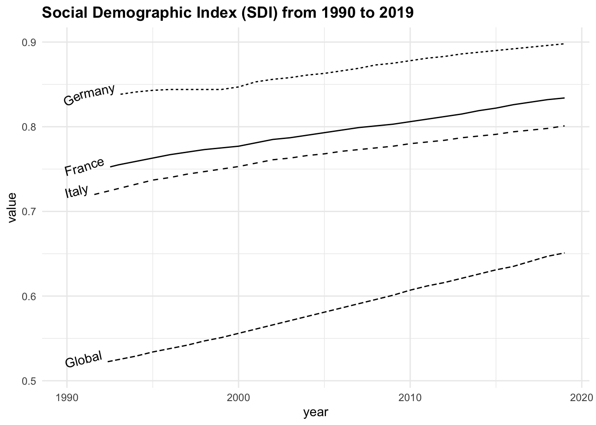
Grouping the data by location and calculating the average SDI, we can note that the highest average value is found in Germany, followed by France, Italy, and the Global average.
sdi90_19 |>
group_by(location) |>
reframe(avg = round(mean(value), 3)) |>
arrange(desc(avg)) |>
filter(location %in% c("Global", "Italy", "France", "Germany"))
#> # A tibble: 4 × 2
#> location avg
#> <chr> <dbl>
#> 1 Germany 0.863
#> 2 France 0.79
#> 3 Italy 0.763
#> 4 Global 0.58Focusing on France as the location of interest, we analyse the time series by decomposing the series into its components and evaluating the autocorrelation function to assess underlying temporal patterns, and apply an ARIMA(1,0,0) model.
sdi_fr <- sdi90_19 |>
filter(location == "France")
sdi_fr |>
head() |>
str()
#> tibble [6 × 3] (S3: tbl_df/tbl/data.frame)
#> $ location: chr [1:6] "France" "France" "France" "France" ...
#> $ year : num [1:6] 1990 1991 1992 1993 1994 ...
#> $ value : num [1:6] 0.738 0.743 0.75 0.755 0.759 0.763The {fpp3} package is a meta-package and contains other packages such as: tsibble, tsibbledata, feasts, fable, and fabletools.
The {tsibble} package is used to set the data ready to be used inside the model. The tsibble::as_tsibble() function coerce our data to be a tsibble object:
library(tsibble)
sdi_fr_ts <- tsibble::as_tsibble(sdi_fr, index = year)
sdi_fr_ts |> head()
#> # A tsibble: 6 x 3 [1Y]
#> location year value
#> <chr> <dbl> <dbl>
#> 1 France 1990 0.738
#> 2 France 1991 0.743
#> 3 France 1992 0.75
#> 4 France 1993 0.755
#> 5 France 1994 0.759
#> 6 France 1995 0.763sdi_fr_ts |> autoplot()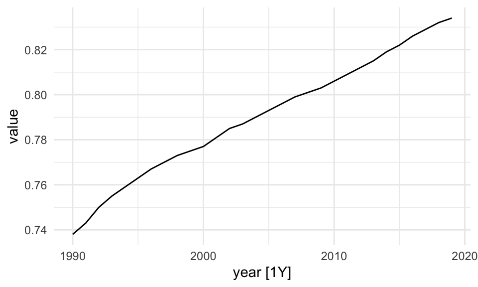
Then, the fabletools::model() function is used to train and estimate models. In this case we use the STL() (Multiple seasonal decomposition by Loess) function, which decomposes a time series into seasonal, trend and remainder components.
dcmp <- sdi_fr_ts |>
model(stl = STL(value))
components(dcmp) |> head()
#> # A dable: 6 x 6 [1Y]
#> # Key: .model [1]
#> # : value = trend + remainder
#> .model year value trend remainder season_adjust
#> <chr> <dbl> <dbl> <dbl> <dbl> <dbl>
#> 1 stl 1990 0.738 0.738 -0.000400 0.738
#> 2 stl 1991 0.743 0.744 -0.000560 0.743
#> 3 stl 1992 0.75 0.749 0.00128 0.75
#> 4 stl 1993 0.755 0.754 0.00136 0.755
#> 5 stl 1994 0.759 0.758 0.000800 0.759
#> 6 stl 1995 0.763 0.762 0.000680 0.763There are three main types of time series patterns: trend, seasonality, and cycles. When a time series is decomposed into components, the trend and cycle are typically combined into a single trend-cycle component, often referred to simply as the trend for the sake of simplicity. As a result, a time series can be understood as comprising three components: a trend-cycle component, a seasonal component, and a remainder component, which captures any other variations in the series.2
The components of a time series can be additive or multiplicative, depending on the nature of the data:
y_t=S_t+T_t+R_t \tag{9.5} y_t=S_t*T_t*R_t \tag{9.6} log(y_t)=log(S_t)+log(T_t)+log(R_t) \tag{9.7}
where:
- y_t is the observed value of the time series at time t,
- S_t represents the seasonal component, capturing regular fluctuations that repeat over fixed periods (e.g., annually or quarterly),
- T_t is the trend component, reflecting the long-term progression or direction in the data (such as gradual increases or declines),
- R_t denotes the remainder or residual component, accounting for short-term noise or random variation not explained by seasonality or trend.
The equation Equation 9.5 assumes that the components combine additively and are independent of one another, which is suitable when the seasonal variation remains relatively constant over time. The equation Equation 9.6 is used when seasonal or residual effects vary proportionally with the trend (e.g., higher variability during periods of higher values). Finally, The equation Equation 9.7 represents a log-transformed multiplicative model, which stabilizes variance and allows for additive decomposition in the logarithmic scale—often preferred when dealing with exponential growth or heteroscedasticity.
The autoplot() function is from the {fabletools} package and allows for the visualization of the components. In particular, the remainder component shown in the bottom panel is what is left over when the seasonal and trend-cycle components have been subtracted from the data.
components(dcmp) |> fabletools ::autoplot()
components(dcmp) |>
as_tsibble() |>
autoplot(value) +
geom_line(aes(y = trend),
linetype="dashed")+
labs(title = "Trend line of SDI in France")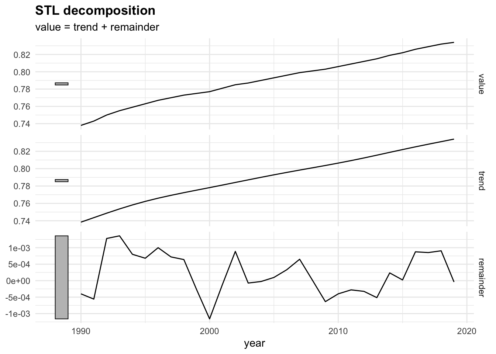
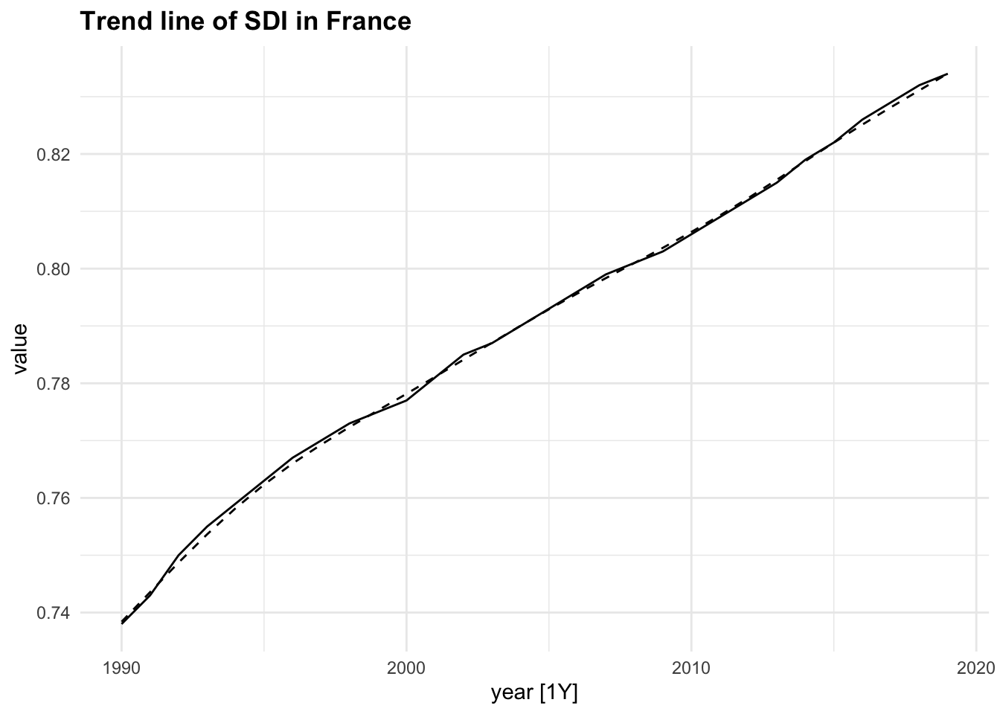
9.4.2 Autocorrelation and Stationarity
Autocorrelation is very important in time series analysis as it explains whether past values influence future values. If a variable today is similar to what it was yesterday or last month, we say it has autocorrelation at lag 1 or lag k.
r_k = \frac{\sum_{t = k + 1}^{T} (y_t - \bar{y})(y_{t-k} - \bar{y})}{\sum_{t = 1}^{T} (y_t - \bar{y})^2} \tag{9.8}
where:
- r_kis the autocorrelation coefficient at lag k,
- y_t is the value of the time series at time t,
- \bar{y} is the mean of the series,
- T is the total number of time points.
Time series that exhibit no autocorrelation, or no predictable relationship between observations at different time points, are referred to as white noise series, where each value is essentially a random draw from the same distribution, with constant mean and variance, with no pattern recognition.
On the contrary, the presence of autocorrelation, or statistically significant correlations between current and past values, indicates the absence of white noise. This means the time series has temporal structure, which can be modelled for prediction. For example, positive autocorrelation suggests that high (or low) values tend to be followed by similarly high (or low) values, while negative autocorrelation implies an alternating pattern.
r_k = \begin{cases} > 0 & \text{positive autocorrelation (e.g., trends)} \\ < 0 & \text{negative autocorrelation (e.g., alternating pattern)} \\ \approx 0 & \text{no autocorrelation (white noise)} \end{cases} \tag{9.9}
To check for autocorrelation in our data, we can use the ACF() function from the {feasts} package:
sdi_fr_ts |>
ACF(value) |>
autoplot()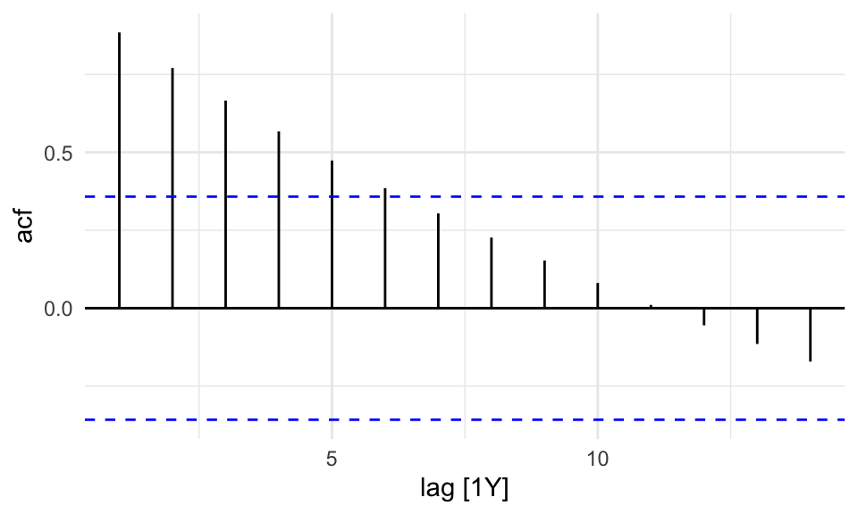
There is no autocorrelation at lag k.
The output clearly shows that our data displays autocorrelation, this validates the use of time series models such as ARIMA, which rely on autocorrelated structure.
To assess whether the series is stationary, we use a specific test, the KPSS test3 or Augmented Dickey-Fuller test. If this test, generally defined as unit root test, indicates non-stationarity, we can apply a first-order difference to remove the trend and convert it into a stationary series.
To apply the KPSS test we use the features() function from {fabletools} package and specify the feature to be: unitroot_kpss. The {urca} might be needed for this task; if needed install.packages("urca").
sdi_fr_ts |>
features(value,
features = unitroot_kpss)
#> # A tibble: 1 × 2
#> kpss_stat kpss_pvalue
#> <dbl> <dbl>
#> 1 1.09 0.01A p-value = 0.01, which is less than 0.05, indicates strong evidence against the null hypothesis of stationarity.
In summary, the presence of autocorrelation combined with the non-stationarity result from the KPSS test suggests that the series has a trend or random walk component, and is not stationary.
In this case we apply the first-order differencing (differences = 1) to the data before applying models that assume stationarity, such as ARIMA.
y^{\prime}_t=y_t-y_{t-1} \tag{9.10}
Differencing transforms the series by subtracting each observation from its previous value, thereby removing trends and stabilizing the mean over time. This transformation often makes the mean and variance more stable, and is essential because non-stationary time series can lead to unreliable or misleading model results.
# Apply first-order differencing to remove trend
sdi_fr_diff <- sdi_fr_ts |>
mutate(diff_value = difference(value, differences = 1))
sdi_fr_diff |> head()
#> # A tsibble: 6 x 4 [1Y]
#> location year value diff_value
#> <chr> <dbl> <dbl> <dbl>
#> 1 France 1990 0.738 NA
#> 2 France 1991 0.743 0.00500
#> 3 France 1992 0.75 0.00700
#> 4 France 1993 0.755 0.00500
#> 5 France 1994 0.759 0.00400
#> 6 France 1995 0.763 0.00400sdi_fr_diff |>
ggplot(aes(x = year, y = diff_value)) +
geom_line() +
labs(title = "First-order Differenced SDI (France)",
x = "Year", y = "Differenced SDI")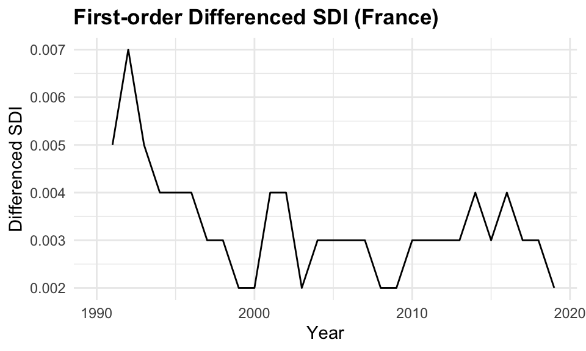
9.4.3 Partial Autocorrelations
The Partial Autocorrelation Function (PACF) removes the effects of intermediate lags. It is a measures of the direct relationship between a time series and its own lagged values. The PACF allows for a more specific identification of how many lags to include in the AR part of the ARIMA model. The number of autoregressive (AR) terms (p) is determined by the number of significant lags in the PACF plot.
sdi_fr_ts |>
PACF(value) |>
autoplot()
sdi_fr_ts |>
gg_tsdisplay(y = value, plot_type = "partial")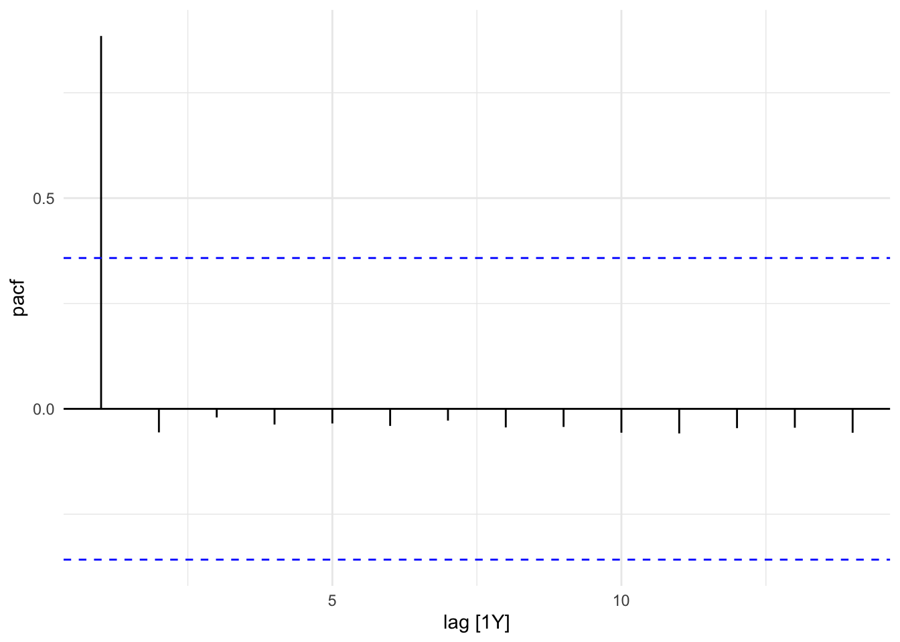
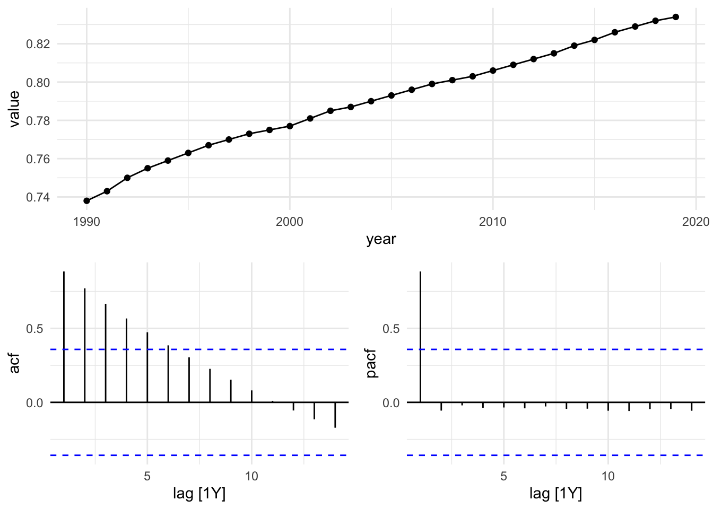
In this plot we can see that the PACF shows a significant spike at lag 1, indicating that the first lag is important for predicting the current value. The subsequent lags are not significant, suggesting that only the first lag should be included in the ARIMA model.
9.4.4 ARIMA Model
The ARIMA model forecasts time series values based on past observations.
Auto-ARIMA model is used to establish the best fit by combining autoregressive, moving average, and differencing components. However, careful analysis of stationarity, autocorrelations, and the residuals is required to fine-tune the model and improve forecasting accuracy.
The ARIMA(value) function automatically selects the best p, d, and q values.
In general, the ARIMA model is defined as:
\text{ARIMA}(p,d,q) = \text{AR}(p) + \text{I}(d) + \text{MA}(q) \tag{9.11}
where:
- \text{AR}(p) is the autoregressive part of the model, which uses past values of the time series to predict future values,
- \text{I}(d) is the integrated part of the model, which represents the differencing of the time series to make it stationary,
- \text{MA}(q) is the moving average part of the model, which uses past forecast errors to predict future values.
The ARIMA() function from the {fable} package automatically selects the appropriate degree of differencing needed to achieve stationarity and fits the ARIMA model accordingly. The report() function provides a summary of the fitted model, including parameter estimates and diagnostic statistics.
fit <- sdi_fr_ts |>
model(ARIMA(value))
fit |> report()
#> Series: value
#> Model: ARIMA(1,1,0) w/ drift
#>
#> Coefficients:
#> ar1 constant
#> 0.5971 0.0013
#> s.e. 0.1562 0.0002
#>
#> sigma^2 estimated as 8.634e-07: log likelihood=162.46
#> AIC=-318.92 AICc=-317.96 BIC=-314.82The model suggests that the differenced series follows a stable upward trend, with moderate autocorrelation and low residual variance, implying a strong and reliable forecast model for the observed data.
In particular, selected ARIMA(1,1,0) indicates:
- One autoregressive (AR) term (ar1 = 0.5971): There is moderate persistence; the differenced value at time t is positively correlated with the previous time point
- First-order differencing (d = 1) was applied to achieve stationarity
- No moving average (MA) term (q = 0)
- The model includes a drift term (\text{constant} = 0.0013), which accounts for a consistent upward trend in the differenced series.
- Standard errors (s.e.) for both coefficients are small, suggesting estimates are fairly precise.
- \sigma^2 = 8.634e-07: Very low variance of the residuals, indicating a good fit.
- \text{Log-likelihood} = 162.46: Used for model comparison.
- \text{AIC} = -318.92, \text{AICc} = -317.96, \text{BIC} = -314.82: All are low values, which generally indicate a better-fitting model when compared to alternatives.
9.4.5 ARIMA Forecast
The forecast() function from the {fable} package is used to generate forecasts based on the fitted ARIMA model. The h parameter specifies the forecast horizon, which is the number of future time points to predict. In this case we used h=10 for the next 10 years.
fit |>
forecast(h = 10) |>
ggplot(aes(x = year, y = .mean)) +
geom_line(data = sdi_fr_ts,
aes(y = value)) +
geom_line(color = "purple", linetype = "dashed")+
labs(title = "Forecast of SDI in France")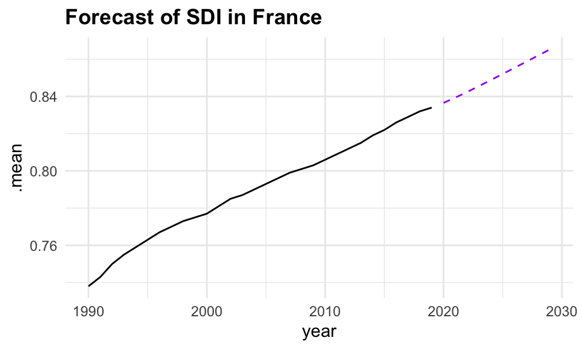
9.4.6 Model Ensembles
In time series analysis, an individual model trained on historical data to generate forecasts is known as a single learner, such as a single ARIMA model. However, a single learner may not be sufficient to capture the full complexity of the data, especially when dealing with intricate patterns, nonlinear relationships, or multiple influencing factors, leading to poor generalisation on unseen data.
Single approaches often fail to account for crucial factors like external shocks, structural changes, or nonlinear relationships, making them insufficient for capturing all aspects of the data, including trend and seasonality.
This is where ensemble learning comes into play.
By aggregating the predictions from multiple single learners, we can form a model ensemble, to improve predictive performance and generate more robust forecasts.
Ensemble learning is a machine learning technique that leverages the diversity of individual models to make more accurate predictions and reduce overfitting. Ensemble methods can reduce the variance and bias of the predictions, examples are techniques such as bagging, boosting, and stacking that leverage the diversity of individual models to create a stronger collective model that outperforms its components.
These methods are widely used in machine learning and predictive modelling to enhance the predictive power of the model and achieve better generalisation performance on unseen data.
In this example, we will use the ARIMA() function to fit multiple ARIMA models with different orders and compare their performance using the glance() function from the {broom} package.
caf_fit <- sdi_fr_ts |>
model(
arima210 = ARIMA(value ~ pdq(2, 1, 0)),
arima013 = ARIMA(value ~ pdq(0, 1, 3)),
stepwise = ARIMA(value),
search = ARIMA(value, stepwise = FALSE)
)caf_fit |>
pivot_longer(cols = everything(),
names_to = "Model name",
values_to = "Orders")
#> # A mable: 4 x 2
#> # Key: Model name [4]
#> `Model name` Orders
#> <chr> <model>
#> 1 arima210 <ARIMA(2,1,0) w/ drift>
#> 2 arima013 <ARIMA(0,1,3) w/ drift>
#> 3 stepwise <ARIMA(1,1,0) w/ drift>
#> 4 search <ARIMA(1,1,0) w/ drift>glance(caf_fit) |>
arrange(AICc) |>
select(.model:BIC)
#> # A tibble: 4 × 6
#> .model sigma2 log_lik AIC AICc BIC
#> <chr> <dbl> <dbl> <dbl> <dbl> <dbl>
#> 1 stepwise 0.000000863 162. -319. -318. -315.
#> 2 search 0.000000863 162. -319. -318. -315.
#> 3 arima210 0.000000896 162. -317. -315. -311.
#> 4 arima013 0.000000950 162. -314. -312. -308.The results of the model ensemble analysis reveal that both the stepwise and search ARIMA models outperform the others in terms of model fit, as indicated by their lower AIC and AICc values. These two models exhibit identical log-likelihood values and minimal residual variance, suggesting that they provide the most accurate forecasts while maintaining model simplicity. In contrast, the arima210 and arima013 models show slightly higher AIC and AICc values, indicating that they are less efficient at capturing the underlying patterns in the data.
Based on these findings, we select the search model with ARIMA(1,1,0), and visualize the residuals of the fitted model.
caf_fit |>
select(search) |>
gg_tsresiduals()
caf_fit |>
forecast(h = 5) |>
filter(.model == "search") |>
ggplot(aes(x = year, y = .mean)) +
geom_line(data = sdi_fr_ts,
aes(y = value)) +
geom_line(color = "purple", linetype = "dashed")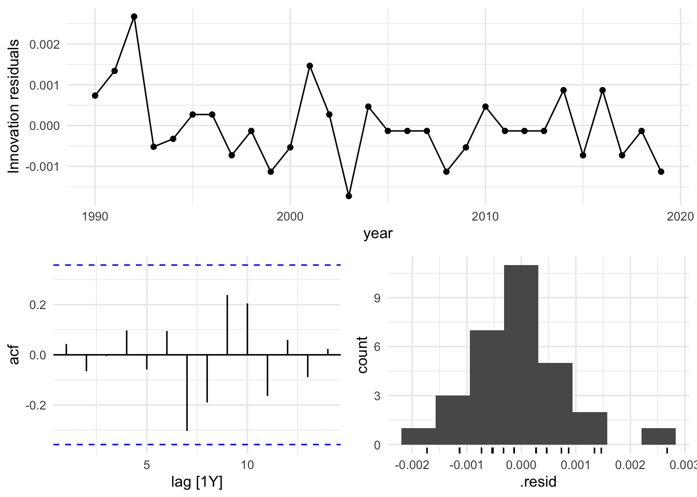
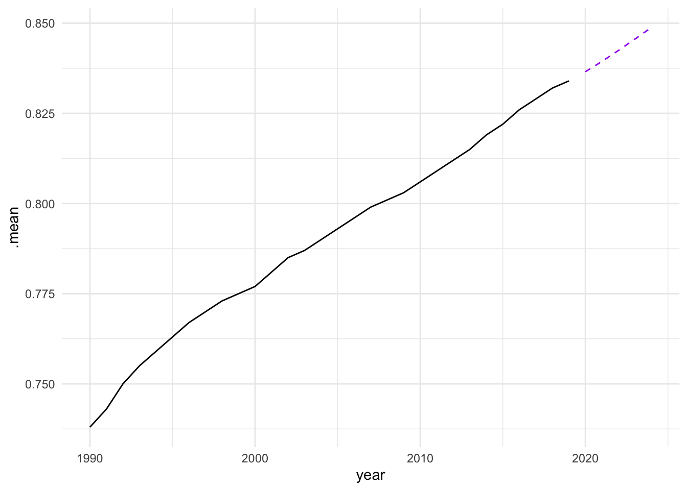
In conclusion, the analysis of the Socio-Demographic Index (SDI) in France from 1990 to 2019 demonstrates the effectiveness of time series analysis and mixed models in understanding and forecasting complex health-related data. By employing techniques such as decomposition, autocorrelation analysis, and ARIMA modelling, we can gain valuable insights into the underlying patterns and trends in the data. The use of ensemble learning further enhances the predictive performance of the models, allowing for more accurate forecasts and better-informed decision-making in public health. However, additional model validation and diagnostic checks, such as residual analysis and cross-validation, should be conducted to ensure that these models generalize well to unseen data and are not overfitting.
9.5 Mixed Models
Mixed models are a powerful statistical tool for analysing data with a hierarchical or nested structure, where observations are grouped within higher-level units. By incorporating both fixed and random effects, mixed models can account for the variability within and between groups, providing a flexible framework for modelling complex data structures. Mixed models are widely used in various fields, and particularly useful in fields like healthcare and infectious diseases where data might be collected across different subjects or time points.
In the following section, we will discuss the application of mixed models in estimating the Years Lived with Disability (YLDs) and the different ratios used in forecasting non-fatal disease burden.
9.5.1 Mixed-Effects Models in Estimating YLDs
Mixed-effects models are particularly useful in estimating YLDs because they can handle data that is hierarchically structured data.
Fixed Effects: These are the primary effects of interest and include variables such as age, gender, year, and specific interventions or treatments.
Random Effects: These capture the variability that is not explained by the fixed effects, such as differences between patients, clinics, or regions.
By using mixed-effects models, we can better account for the within-subject and between-subject variability, providing more accurate estimates of YLDs.
9.6 Example: YLDs due to Tuberculosis - Mixed-Effects Models
In this example, we will demonstrate how estimated Years Lived with Disability (YLDs) due to Tuberculosis can be used to predict future values using mixed-effects models.
We use the {lme4} package to fit mixed-effects models, enabling us to account for both fixed effects (e.g., year, prevalence) and random effects (e.g., variability across countries). This approach is particularly valuable for analysing grouped or repeated measures data, such as longitudinal health data, where observations are not independent over time or across different levels of analysis.
Data are from the g7_hmetrics dataset in the {hmsidwR} package, which contains rates (per 100,000 population) for YLDs, deaths, incidence, and prevalence of Respiratory infections and tuberculosis in 2010 and 2019 for selected countries.
library(lme4)
library(tidyverse)
tuberculosis <- hmsidwR::g7_hmetrics %>%
filter(measure %in% c("Prevalence",
"YLDs"),
str_detect(cause, "Tuberculosis"),
!year == 2021,
!location == "Global",
metric == "Rate",
sex == "both") %>% # per 100,000 population
select(year, location, measure, val) %>%
pivot_wider(names_from = measure,
values_from = val)
tuberculosis %>% head()
#> # A tibble: 6 × 4
#> year location YLDs Prevalence
#> <dbl> <chr> <dbl> <dbl>
#> 1 2010 Japan 3.07 17720.
#> 2 2019 Japan 2.03 14215.
#> 3 2010 Germany 1.79 7758.
#> 4 2019 Germany 1.55 6706.
#> 5 2010 UK 2.67 8670.
#> 6 2019 UK 1.84 7534.We can see how the level of YLDs due to tuberculosis has decreased in all selected countries over the 10-year period.
library(ggpattern)
ggplot(tuberculosis,
aes(x = fct_reorder(location, YLDs),
y = YLDs, group = year)) +
ggpattern::geom_col_pattern(aes(pattern = factor(year)),
position = "dodge",
fill= 'white',
colour= 'black') +
labs(title="YLDs for Tuberculosis by Location and Year",
x = "Location", pattern = "Year")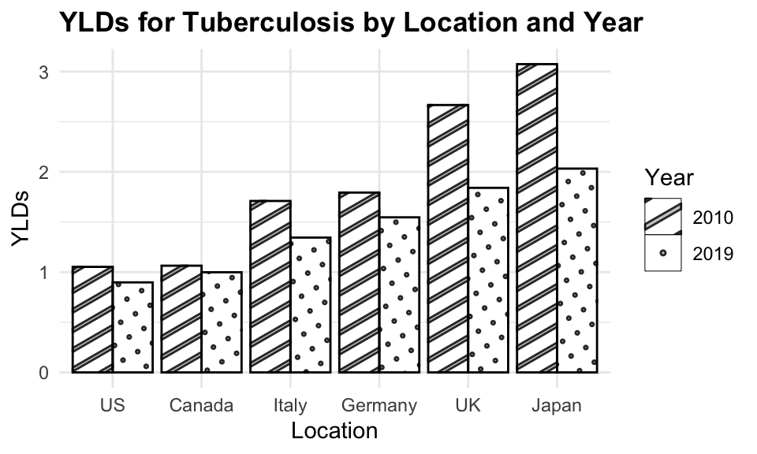
The disability weight for tuberculosis in 2019 is set at 0.333 for the Global region. The duration, derived from the GBD 2021 and based on a systematic review, was adjusted for treated and untreated cases: it was estimated to be 3 years for untreated cases and 6 months for treated cases.4
The formula YLDs ~ Prevalence + year + (1 | location) specifies a linear mixed-effects model for predicting Years Lived with Disability (YLDs) due to tuberculosis. The model includes fixed effects for prevalence and year, as well as a random intercept for location ((1 | location)). This allows for the estimation of YLDs while accounting for variability across different locations.
# Define the formula
formula <- YLDs ~ Prevalence + year + (1 | location)
# Fit the mixed-effects model
model <- lmer(formula, data = tuberculosis)
model
#> Linear mixed model fit by REML ['lmerMod']
#> Formula: YLDs ~ Prevalence + year + (1 | location)
#> Data: tuberculosis
#> REML criterion at convergence: 34.6921
#> Random effects:
#> Groups Name Std.Dev.
#> location (Intercept) 0.6202
#> Residual 0.1773
#> Number of obs: 12, groups: location, 6
#> Fixed Effects:
#> (Intercept) Prevalence year
#> 67.7989019 0.0001619 -0.0336388
#> fit warnings:
#> Some predictor variables are on very different scales: consider rescaling# Extract fixed effects
fixed_effects <- fixef(model)
fixed_effects
#> (Intercept) Prevalence year
#> 67.7989018583 0.0001619458 -0.0336387726Considering only the fixed effects the model function becomes: \hat{YLDs} = 67.79889 + 0.00016*Prevalence - 0.03364*year \tag{9.12}
In particular, a prevalence coefficient of 0.00016 means that for each unit increase in prevalence, YLDs increase by 0.00016, while a year coefficient of -0.03364 means that for each unit increase in year, YLDs decrease by 0.03364.
Looking at the random effects, we can see how the model accounts for the variability across different locations.
# Extract random effects
random_effects <- ranef(model)
random_effects
#> $location
#> (Intercept)
#> Canada -0.40736806
#> Germany 0.44667833
#> Italy -0.09317570
#> Japan -0.06401586
#> UK 0.87190488
#> US -0.75402360
#>
#> with conditional variances for "location"The model function with random_effects for each location becomes:
\begin{split} \hat{YLDs} = 67.79889 \\ + 0.00016 \cdot \text{Prevalence} \\ - 0.03365 \cdot \text{year} \\ + \text{ random effect for each location} \end{split} \tag{9.13}
Then, predictions are made for the YLDs due to tuberculosis using the mixed-effects model on observed data and new data. The predictions are compared with the actual YLDs to evaluate the model’s performance.
# Predict YLDs for observed data
predictions <- predict(model,
tuberculosis,
allow.new.levels = TRUE)
tuberculosis$predicted_YLD <- predictionsPredicted versus Estimated YLDs due to Tuberculosis are shown in the following plot:
ggplot(tuberculosis %>%
filter(!location=="Global"),
aes(x = YLDs, y = predicted_YLD,
group = location)) +
geom_point(aes(shape = factor(location))) +
geom_abline() +
facet_wrap(~ year) +
labs(title = "YLDs due to Tuberculosis",
subtile = "Predicted vs Estimated",
x = "YLDs",
y = "Predicted YLD",
shape = "Location")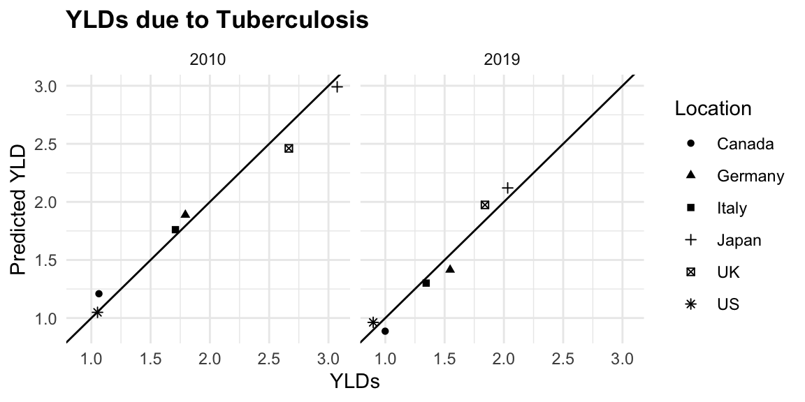
The plot shows a good fit between the predicted and estimated YLDs, indicating that the model is able to capture the underlying trends in the data. The error is calculated as the absolute difference between the predicted and estimated YLDs, divided by the estimated YLDs, multiplied by 100 to express it as a percentage.
tuberculosis %>%
mutate(ape = abs(predicted_YLD - YLDs) / YLDs * 100) %>%
summarise(mape = mean(ape, na.rm = TRUE))
#> # A tibble: 1 × 1
#> mape
#> <dbl>
#> 1 6.21The mean absolute percent error (MAPE) is 6.2%, indicating that the model is able to predict YLDs with a reasonable level of accuracy.
The residual sum of squared error (RSE) is also calculated as the square root of the sum of squared residuals divided by the number of observations minus the number of parameters in the model. The RSE is a measure of how well the model fits the data, and a lower value indicates a better fit.
tuberculosis %>%
mutate(residuals = predicted_YLD - YLDs) %>%
summarise(
rse = sqrt(sum(residuals^2) / (nrow(tuberculosis) - length(fixef(model)))))
#> # A tibble: 1 × 1
#> rse
#> <dbl>
#> 1 0.126A RSE of 0.1262147 indicates that the model is able to predict YLDs with a reasonable level of accuracy.
Let’s use the data for 2021 which we have left aside, and fit the model.
tuberculosis_2021 <- hmsidwR::g7_hmetrics %>%
filter(measure %in% c("Prevalence",
"YLDs"),
str_detect(cause, "Tuberculosis"),
year == 2021,
!location == "Global",
metric == "Rate",
sex == "both") %>% # per 100,000 population
select(year, location, measure, val) %>%
pivot_wider(names_from = measure,
values_from = val)
tuberculosis_2021
#> # A tibble: 6 × 4
#> year location YLDs Prevalence
#> <dbl> <chr> <dbl> <dbl>
#> 1 2021 Japan 1.98 13567.
#> 2 2021 Germany 1.54 6507.
#> 3 2021 UK 1.53 7308.
#> 4 2021 US 0.925 11313.
#> 5 2021 Italy 1.38 9061.
#> 6 2021 Canada 1.02 8767.# Predict YLDs for new data
predictions_2021 <- predict(model,
tuberculosis_2021,
allow.new.levels = TRUE)Check how the model performed on the 2021 data. The predictions are compared with the actual YLDs to evaluate the model’s performance.
tuberculosis_2021$predicted_YLD <- predictions_2021
tuberculosis_2021 <- tuberculosis_2021 %>%
select(-Prevalence) %>%
mutate(residuals = predicted_YLD - YLDs)
tuberculosis_2021
#> # A tibble: 6 × 5
#> year location YLDs predicted_YLD residuals
#> <dbl> <chr> <dbl> <dbl> <dbl>
#> 1 2021 Japan 1.98 1.95 -0.0283
#> 2 2021 Germany 1.54 1.32 -0.229
#> 3 2021 UK 1.53 1.87 0.344
#> 4 2021 US 0.925 0.893 -0.0316
#> 5 2021 Italy 1.38 1.19 -0.190
#> 6 2021 Canada 1.02 0.827 -0.193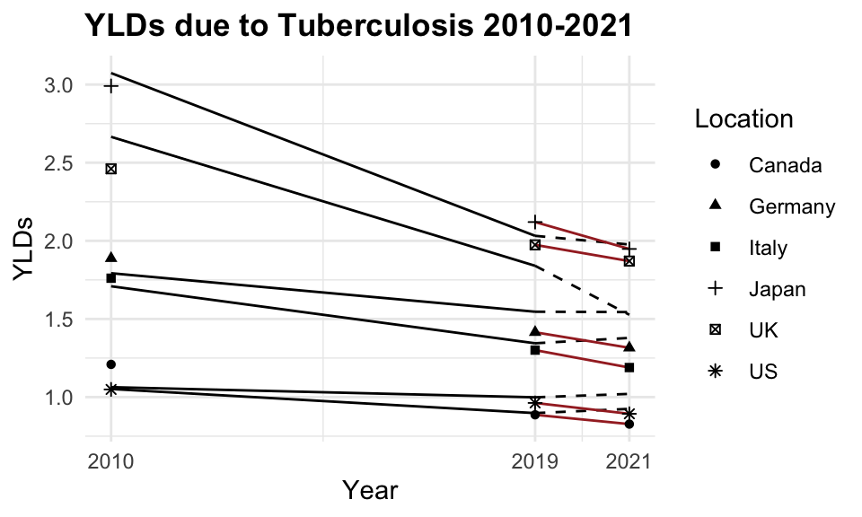
The plot shows the estimated YLDs due to tuberculosis for 2010, 2019, and 2021. The dashed lines represent the estimated YLDs for 2010 and 2019, while the solid lines represent the predicted YLDs for 2021. The points represent the actual YLDs for 2021. The model is able to predict YLDs with a reasonable level of accuracy, as indicated by the close fit between the predicted and actual values.
9.7 Summary
Predictive modelling is a valuable tool for forecasting future trends and making informed decisions based on historical data. By leveraging the insights gained from the models, we can anticipate the trajectory of infectious diseases, estimate disease burden, and evaluate the impact of interventions on population health. The models can be further refined and optimised to improve their predictive performance and provide more accurate forecasts. By combining predictive modelling with time series analysis and mixed models, we can gain a comprehensive understanding of the complex dynamics of public health and make data-driven decisions to improve population health outcomes.
Forecasting: Principles and Practice (3rd Ed), n.d., https://otexts.com/fpp3/.↩︎
Forecasting.↩︎
“KPSS Test,” October 12, 2023, https://en.wikipedia.org/w/index.php?title=KPSS_test&oldid=1179751435.↩︎
Edine W. Tiemersma et al., “Natural History of Tuberculosis: Duration and Fatality of Untreated Pulmonary Tuberculosis in HIV Negative Patients: A Systematic Review,” PLOS ONE 6, no. 4 (April 4, 2011): e17601, doi:10.1371/journal.pone.0017601.↩︎